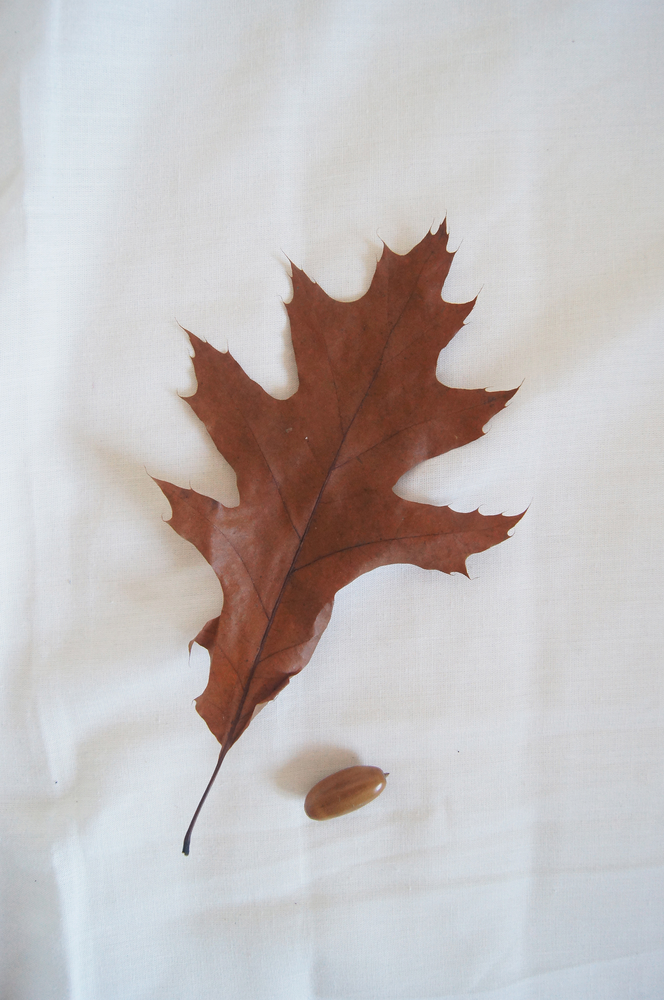

На социологии сегодня мы обсуждали тему семьи, поэтому мне показалось логичным провести ассоциацию с деревом, листом и желудем. Они как небольшая семья, где желудь - это еще маленький ребенок, лист - уже подросток, а дерево - их родитель. Кроме того, здесь можно наблюдать целый цикл жизни. Желудь - это символ новой жизни, он еще свеж и способен дать новую жизнь, а вот лист, уже опавший и засохший, уже ожидает только смерть.
